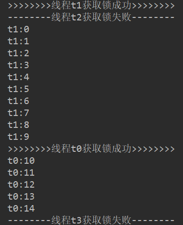

CAS算法介绍
CAS算法全称为Compare and swap，翻译成中文就是“比较与交换”，是一种有名的无锁算法。无锁编程，就是指在不使用锁的情况下实现多线程之间的变量同步，也就是在没有线程被阻塞的情况下实现变量的同步。
在CAS算法中需要理解3个操作数，内存值V，旧的预期值A，要修改的新值B。
当且仅当预期值A和内存值V相同时，将内存值V修改为B，否则什么都不做，这就是CAS算法。现代的CPU提供了特殊的指令，可以自动更新共享数据，而且能够检测到其他线程的干扰。
Java中CAS算法的实现
很多人认为Java没办法直接操作内存，其实不然，sun为Java添加了一个“后门”，可以允许Java简介的操作内存，而这个“后门”就是Unsafe类。
Unsafe类是在sun.misc包下，不属于Java标准。但是很多Java的基础类库，包括一些被广泛使用的高性能开发库都是基于Unsafe类开发的，比如Netty、Cassandra、Hadoop、Kafka等。Unsafe类在提升Java运行效率，增强Java语言底层操作能力方面起了很大的作用。
Unsafe类使Java拥有了像C语言的指针一样操作内存空间的能力，同时也带来了指针的问题。过度的使用Unsafe类会使得出错的几率变大，因此Java官方并不建议使用的，官方文档也几乎没有。Oracle正在计划从Java 9中去掉Unsafe类。
而我们的CAS算法也是在Unsafe类中实现的。
如：
1 | public final native boolean compareAndSwapInt(Object var1, long var2, int var4, int var5); |
Unsafe类中绝大部分的方法都是native方法，调用本地方法实现，CAS算法也是。
CAS算法的ABA问题
CAS算法有一个经典的ABA问题；
ABA问题是指，线程1从内存V中取出值为A，然后期望改成某一值，同一时刻一个线程2从内存V中取出值也为A，然后期望改为B，此时由于某些原因，线程1被阻塞，线程2继续执行，将内存V的值改为了B，然后又一线程将内存V的值改为了A，此时线程1被唤醒，由于内存V的值为A所以导致线程1修改成功。其实此时线程1对比的内存V的值A并不是开始的那个A了，应该要修改失败才对。
ABA问题在Java中的解决
要解决ABA问题其实很简单，可以为内存V的值添加一个版本号或者修改次数，当预期值A与内存V值相等时而版本号或修改次数与V的版本号或修改次数不等，则拒绝修改。
Java中AtomicStampedReference类解决了ABA问题，我们来看下它是怎么实现的。
AtomicStampedReference类中有一个内部类Pair，Pair类里reference属性保存了旧的期望值，stamp属性保存了版本号或者是修改次数。
我们来看下AtomicStampedReference类的compareAndSet方法源码：
1 | public boolean compareAndSet(V expectedReference, |
利用CAS算法实现一个tryLock
获取Unsafe类实例
Unsafe类提供了一个静态方法来获取它：
1 | public static Unsafe getUnsafe() { |
虽然Unsafe类提供了静态方法去获取它，但是我们还是拿不到，我们从源码可以看到，在调用getUnsafe方法时，对该方法做了安全限制，会抛出异常；
尽管如此，我们还是可以通过Java万能的反射来获取这个类的实例的，在Unsafe类中，Unsafe使用了theUnsafe属性来存储了自身的实例对象，我们可以通过反射，来获取Unsafe的theUnsafe属性的值，从而获取Unsafe实例。
1 | Class<?> clazz = Unsafe.class; |
构造Unsafe实现的tryLock
首先我们创建一个UnsafeLock的类，来完成使用Unsafe完成锁的功能；
这个类里面我们需要一个status属性表示加锁状态，一个unsafe属性来存储Unsafe实例；
Unsafe在修改一个内存值时需要传入这个内存值的偏移量，所以我们还需要一个属性来存储status的偏移量；
然后再实现我们的lock方法和unLock方法。
我们自己实现的锁源码如下：
1 | public class UnsafeLock { |
最后我们来写一个测试类来测试下这个tryLock：
1 | public class MyLockTest { |
运行的结果如下图：



本文首发于我在万达摆地摊's blog，转载请注明来源